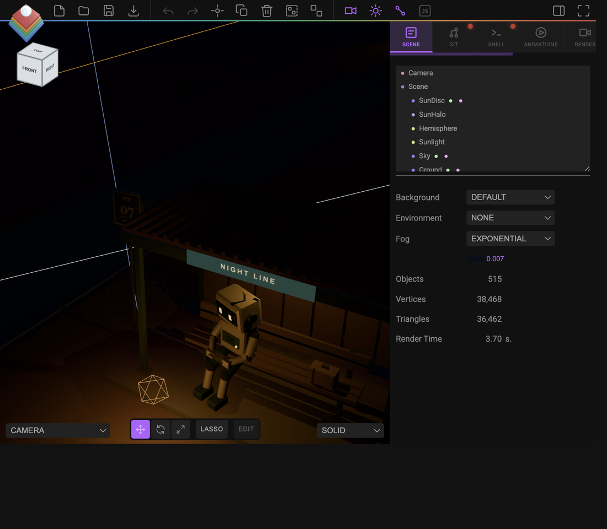
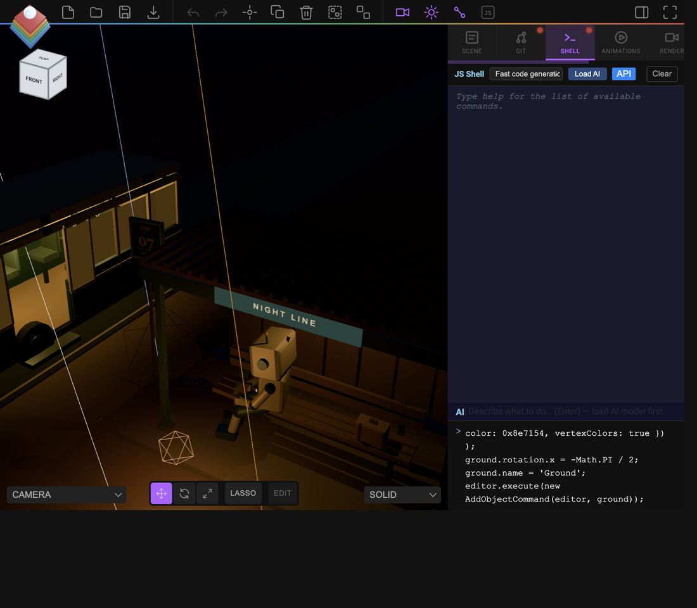
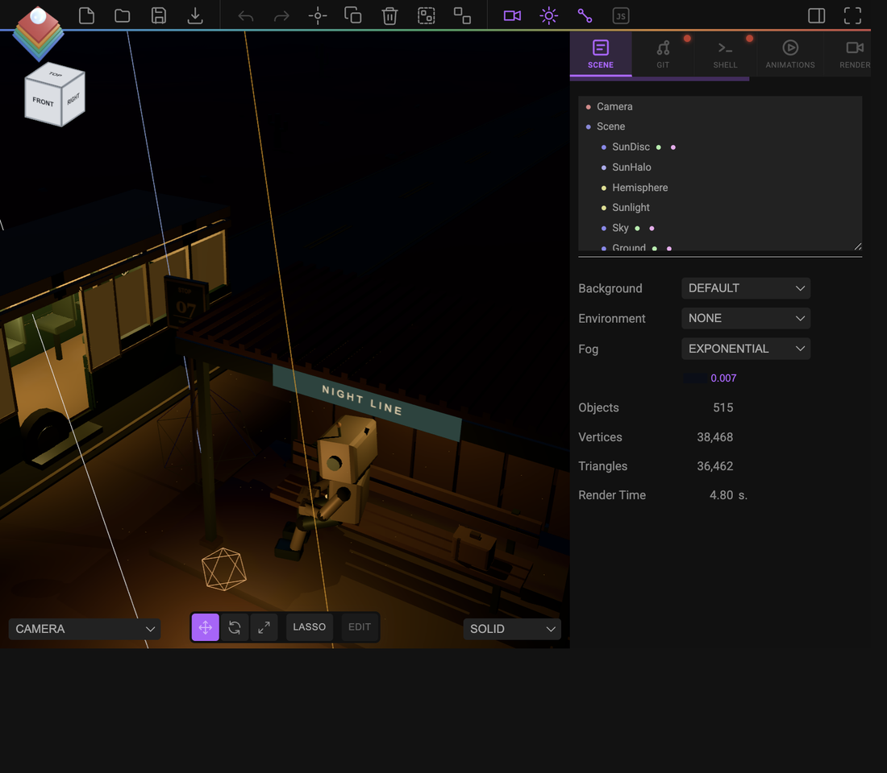
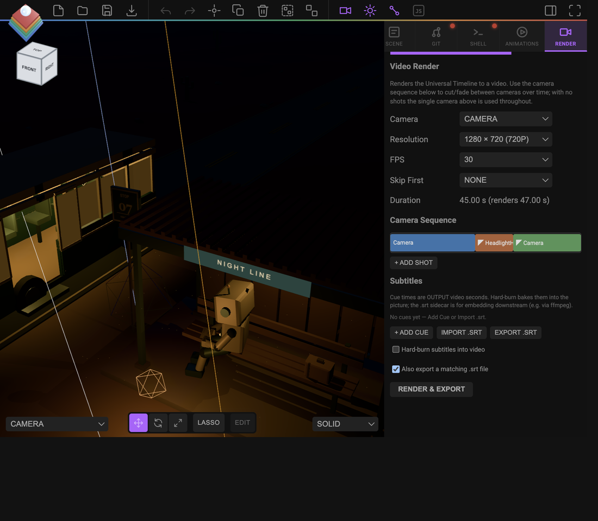

Build a night scene from scratch
No importing assets, no AI — just the JS Shell, a handful of reusable helper functions, and the Universal Timeline. This walks through the same workflow used to build "Last Stop," a procedural night bus-stop scene: helpers → environment → a structure → night lighting → a moving object → a static hero camera → render. Open the editor, open the Shell tab, and paste each block in order.

editor.execute(...) under the hood). Procedural scenes especially benefit from this — a road, a fence, a field of rocks are all "the same shape N times with varied params," which is a loop, not N clicks.1 Write reusable helpers first
Almost everything you build is one of a few shapes: a box, a rounded box, a rod between two points. Write these once at the top of your session and every later step gets shorter:
function mat(color, opts = {}) {
return new MeshStandardMaterial({ color, roughness: 0.7, ...opts });
}
function mesh(geometry, material, x = 0, y = 0, z = 0, parent = null) {
const m = new Mesh(geometry, material);
m.position.set(x, y, z);
m.castShadow = m.receiveShadow = true;
if (parent) parent.add(m);
else editor.execute(new AddObjectCommand(editor, m));
return m;
}
function box(w, h, d, material, x, y, z, parent) {
return mesh(new BoxGeometry(w, h, d), material, x, y, z, parent);
}
function rod(a, b, radius, material, parent) {
const dir = new Vector3().subVectors(b, a);
const seg = mesh(new CylinderGeometry(radius, radius, 1, 8), material, 0, 0, 0, parent);
seg.position.copy(a).add(b).multiplyScalar(0.5);
seg.scale.y = dir.length();
seg.quaternion.setFromUnitVectors(new Vector3(0, 1, 0), dir.clone().normalize());
return seg;
}Every later helper (rounded boxes, canvas textures for signs, procedural rock fields) is the same idea: a small function you write once, then call in a loop.
2 Ground, sky, and fog
A ground plane with a bit of noise reads far better than a flat color. Displace vertices in a loop, and use FogExp2 so distant geometry fades out instead of hard-clipping at the far plane:
const groundGeo = new PlaneGeometry(60, 60, 40, 40);
const pos = groundGeo.attributes.position;
for (let i = 0; i < pos.count; i++) {
const x = pos.getX(i), y = pos.getY(i);
pos.setZ(i, Math.sin(x * 0.15) * Math.cos(y * 0.15) * 0.4);
}
groundGeo.computeVertexNormals();
const ground = mesh(groundGeo, mat(0x8e7154));
ground.rotation.x = -Math.PI / 2;
ground.name = 'Ground';
scene.fog = new FogExp2(0x0a0e18, 0.02);3 A structure, built as a group
Group related parts under one named Group so the Outliner stays readable and you can move/animate the whole thing as one object. A simple shelter — four posts and a roof slab — demonstrates the pattern everything bigger (a bus, a fence, a robot) also follows:
const shelter = new Group();
shelter.name = 'Shelter';
editor.execute(new AddObjectCommand(editor, shelter));
const post = mat(0x526765, { metalness: 0.5, roughness: 0.65 });
for (const x of [-1.5, 1.5]) for (const z of [-1, 1]) {
box(0.12, 2.4, 0.12, post, x, 1.2, z, shelter);
}
box(3.4, 0.15, 2.6, mat(0x815840), 0, 2.5, 0, shelter);parent instead of always AddObjectCommand. The top-level group gets one undo-tracked AddObjectCommand; its children are just parent.add(...) since they're not independently addressable objects in the scene graph — the same pattern the built-in helpers use for a bus with 80+ parts, so undo/redo stays one step instead of eighty.4 Light it for night
A dim HemisphereLight for ambient sky/ground fill, a low-intensity DirectionalLight standing in for moonlight, and one warm PointLight as the actual subject of the shot — the thing a viewer's eye goes to:
const hemi = new HemisphereLight(0x0a1428, 0x161208, 0.1);
hemi.name = 'Hemisphere';
editor.execute(new AddObjectCommand(editor, hemi));
const moon = new DirectionalLight(0xaac4ff, 0.16);
moon.position.set(-40, 90, -30);
moon.name = 'Moonlight';
editor.execute(new AddObjectCommand(editor, moon));
const lamp = new PointLight(0xffc37e, 2.4, 12, 2);
lamp.position.set(0, 2.6, 0);
lamp.castShadow = true;
lamp.name = 'Lamp';
editor.execute(new AddObjectCommand(editor, lamp));MeshStandardMaterial in the scene independently of every light object above, and at its default intensity it will wash out a night scene no matter how dim you make your lights. Set it to None (or editor.signals.sceneEnvironmentChanged.dispatch('None') from the Shell) before judging your lighting — this single setting was the difference between a bright "dusk" look and a real night look while building the reference scene.A couple of intensity numbers are easy to get wrong the first time too: if a light is going to flicker or pulse later via a per-frame script, its authored intensity should be the steady-state value the flicker oscillates around — not whatever placeholder you happened to construct it with. A PointLight(color, 47, ...) that a script immediately overwrites to 2.4 * flicker every frame should be authored at 2.4, since Strata's timeline bakes keyframes rather than running a per-frame callback.

editor, THREE, scene, the Command classes, and every bare geometry constructor).5 Animate something along the timeline
Give the shelter (or any object) a moving companion — a lit box standing in for a vehicle works fine to demonstrate the grammar. $S(selector).at(seconds).animate(...) places one keyframe event; chain more calls to build a multi-leg move:
const rig = box(1, 1, 3, mat(0x365854, { metalness: 0.3 }), 0, 0.5, -30);
rig.name = 'Rig';
$S('#Rig').at(0).animate({ to: { positionZ: -8 } }, 8000, 'linear');
$S('#Rig').at(8).animate({ to: { positionZ: -8 } }, 1000); // a short hold
$S('#Rig').at(9).animate({ to: { positionZ: 20 } }, 4000, 'ease-in');Scrub the Animations tab's timeline to preview — $S(...).at(t) events are absolute seconds on one shared clock for the whole scene, so a camera, a light's intensity, and this rig can all be choreographed against the same numbers. See the animation guide for the full grammar (fades, lookAt, per-axis targets, class-based batch selectors).

6 Cut in a static hero camera
Your main camera can stay wherever you like — animated, or just parked at a default angle. For one moment worth a dedicated, hand-framed shot (say, the rig's closest pass to the lamp), add a second, non-animated camera and schedule it in the Render tab's Camera Sequence rather than re-keyframing the main one:
const heroCam = new PerspectiveCamera(38, 16 / 9, 0.1, 500);
heroCam.name = 'HeroCam';
heroCam.position.set(4, 1.6, -4);
heroCam.lookAt(0, 1, 0);
editor.execute(new AddObjectCommand(editor, heroCam));
editor.scene.userData.renderShots = [
{ id: 'shot-intro', at: 0, camera: editor.camera.uuid, transition: 'cut', transitionDur: 0.5 },
{ id: 'shot-hero', at: 8, camera: heroCam.uuid, transition: 'fade', transitionDur: 0.8 },
{ id: 'shot-return', at: 12, camera: editor.camera.uuid, transition: 'fade', transitionDur: 0.8 },
];
editor.signals.sceneGraphChanged.dispatch();A shot runs from its at until the next shot's at (or the timeline's end) — with zero shots, the render always falls back to the single camera picked at the top of the Render tab, so this is purely additive. Preview any camera by temporarily pointing the viewport at it:
editor.viewportCamera = heroCam;
editor.signals.viewportCameraChanged.dispatch();
7 Render it
- Open the Render tab, pick a resolution and FPS.
- The Camera Sequence lane shows your shots as colored blocks — click one to retarget its camera or nudge its timing without touching the Shell again.
- Click Render & Export — rendering is real-time, so a 20s timeline takes about 20s.
CatmullRomCurve3 + TubeGeometry), a field of procedurally-scattered rocks and cacti, an articulated robot figure (cylinders connected end-to-end via quaternion alignment, same idea as the rod() helper above), a bus with real glass materials and working headlight beams, and a full multi-shot camera choreography over a 45-second timeline. Every one of those is the same handful of patterns from this tutorial — a helper function, a loop, a named Group, a $S(...).at(t).animate(...) call — just repeated and combined more times.